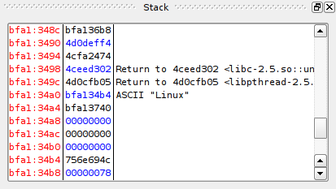

The stack view is very similar to the data view, in fact it is based on the same widget. The primary differences are that it will adjust to show the data at the stack pointer on each update, and it will try to show strings and control flow data when it can.
Control flow data is currently determined by looking at the bytes preceeding the potential return address, if those bytes look like a call, edb will assume that a call put that value on the stack.